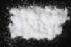

|
|
(For further information on spectroscopy, see:
http://speclab.cr.usgs.gov)
TITLE: Heulandite GDS3 Zeolite DESCRIPT
DOCUMENTATION_FORMAT: MINERAL
SAMPLE_ID: GDS3
MINERAL_TYPE: Tectosilicate
MINERAL: Heulandite (Zeolite group)
FORMULA: (Na,Ca)2-3Al3(Al,Si)2Si13O36*12H2O
FORMULA_HTML: (Na,Ca)2-3Al3(Al,Si)2Si13O36•12H2O
COLLECTION_LOCALITY: Poonah, India
ORIGINAL_DONOR: Wards Scientific
CURRENT_SAMPLE_LOCATION: USGS Denver Spectroscopy Laboratory
ULTIMATE_SAMPLE_LOCATION: USGS Denver Spectroscopy Laboratory
SAMPLE_DESCRIPTION:
The sample appears white and to be spectrally pure.
IMAGE_OF_SAMPLE:

END_SAMPLE_DESCRIPTION.
XRD_ANALYSIS:
Zeolites of the heulandite group
Probably a mixture of compositions; best match is clinoptilolite.
Konnert, Judith and Marta Flohr, 1992, unpublished data, USGS Reston, VA.
END_XRD_ANALYSIS.
COMPOSITIONAL_ANALYSIS_TYPE: None # XRF, EM(WDS), ICP(Trace), WChem
COMPOSITION_TRACE:
COMPOSITION_DISCUSSION:
None
END_COMPOSITION_DISCUSSION.
MICROSCOPIC_EXAMINATION:
Bimodal Grain Size Distribution:
mode 1: 176 µm @ 50 vol%
mode 2: 40 µm @ 50 vol%
average grain size= 128 µm
Low relief, one good cleavage, biaxial (+), refractive index < glycerin. No contaminants, sample very clean. All this is consistent with this sample being heulandite or clinoptilolite. G. Swayze.
END_MICROSCOPIC_EXAMINATION.
SPECTROSCOPIC_DISCUSSION:
The spectrum matches that of heulandite NMNH84534 very closely and is a bit more inconsistent with those of the clinoptilolites GDS2 and GDS152 in this database. Because the XRD information is not clearly indicative of this sample being clinoptilolite, based on the spectral match to heulandite NMNH84534 I think it should remain labeled heulandite. G. Swayze
END_SPECTROSCOPIC_DISCUSSION.
SPECTRAL_PURITY: 1a2a3a4_ # 1= 0.2-3, 2= 1.5-6, 3= 6-25, 4= 20-150 microns
| LIB_SPECTRA_HED: | where | Wave Range | Av_Rs_Pwr | Comment |
|---|---|---|---|---|
| LIB_SPECTRA: | splib04a r 2143 | 0.2-3.0µm | 200 | g.s.= 128 µm |
| LIB_SPECTRA: | splib05a r 3296 | 0.2-3.0µm | 200 | g.s.= |
| LIB_SPECTRA: | splib06a r 9788 | g.s.= | ||
| LIB_SPECTRA: | splib06a r 9800 | g.s.= |
{kind=link}